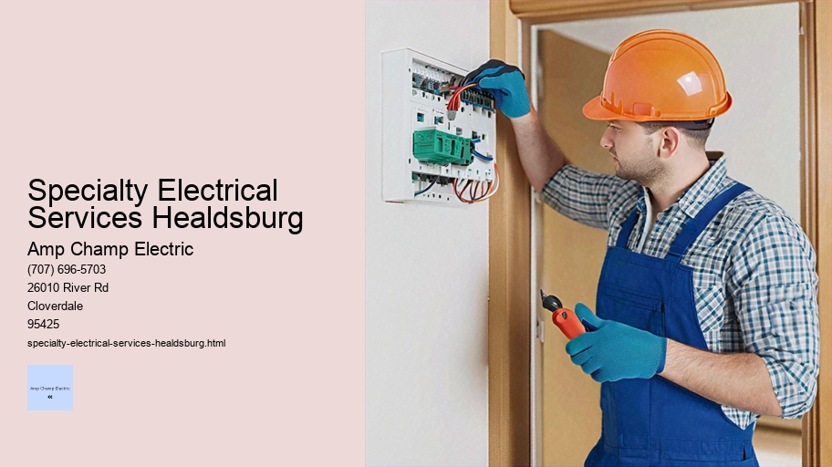

News
Electrical Installation Healdsburg
Electrical Installation Healdsburg
Electrical Installation Santa Rosa
Electrical Installation Cloverdale
Electrical Installation Geyserville
Electrical Installation Windsor
Maintenance and Repair Services Healdsburg
Maintenance and Repair Services Healdsburg
Maintenance and Repair Services Santa Rosa
Maintenance and Repair Services Cloverdale
Maintenance and Repair Services Geyserville
Maintenance and Repair Services Windsor
Electrical Safety Inspections Healdsburg
Electrical Safety Inspections Healdsburg
Electrical Safety Inspections Santa Rosa
Electrical Safety Inspections Cloverdale
Electrical Safety Inspections Geyserville
Electrical Safety Inspections Windsor
Energy Efficiency Upgrades Healdsburg
Energy Efficiency Upgrades Healdsburg
Energy Efficiency Upgrades Santa Rosa
Energy Efficiency Upgrades Cloverdale
Energy Efficiency Upgrades Geyserville
Energy Efficiency Upgrades Windsor
Specialty Electrical Services Healdsburg
Specialty Electrical Services Healdsburg
Specialty Electrical Services Santa Rosa
Specialty Electrical Services Cloverdale
Specialty Electrical Services Geyserville
Specialty Electrical Services Windsor
About Us
Contact Us

Specialty Electrical Services Healdsburg
GFCI Outlet Installation
Title: Navigating the Intricacies of Specialty Electrical Services
In the dynamic world of electrical systems, there exists a niche yet crucial domain known as specialty electrical services. These services encompass a broad range of advanced and highly technical aspects of electrical work that go beyond standard residential or commercial installations and repairs. From intricate wiring in industrial machinery to sophisticated home automation systems, specialty electrical services are integral to ensuring functionality, safety, and efficiency in various applications.
At the heart of these specialized services lies a commitment to precision and expertise. Electricians specializing in this field possess a deep understanding of complex circuitries and are adept at handling high-voltage equipment or delicate electronic components. They undergo rigorous training and continuous education to stay abreast of the latest technological advancements, code requirements, and best practices.
One prominent area within specialty electrical services is the design and implementation of custom lighting solutions. Whether for aesthetic appeal in a boutique hotel or optimal luminosity in an art gallery, lighting plays a pivotal role in setting atmosphere and functionality. A specialist electrician will consider factors such as color temperature, energy consumption, dimming capabilities, and integration with smart control systems when crafting these bespoke lighting designs.
Another critical aspect is power quality analysis and correction. In environments where consistent power delivery is essential—such as hospitals or data centers—a slight fluctuation can have catastrophic consequences. Specialty electricians employ sophisticated tools to monitor power quality parameters like voltage stability, harmonic distortion, and transient disturbances. By identifying anomalies early on, they can implement corrective measures such as surge protection devices or uninterruptible power supplies (UPS) to safeguard sensitive equipment.
Industrial automation represents yet another dimension of specialty electrical services where expertise shines bright.
Journeyman Electrician
The transition towards Industry 4.0 has prompted many manufacturing facilities to upgrade their operations with automated conveyor belts, robotic arms, programmable logic controllers (PLCs), and other smart technologies. Herein lies the role of the specialty electrician who meticulously integrates these elements into cohesive systems that boost productivity while ensuring safety protocols are uncompromised.
Renewable energy installations also fall under this category as more individuals and businesses opt for sustainable sources like solar panels or wind turbines. The installation process involves not just mounting panels but also configuring inverters, battery storage systems, grid interconnections, along with navigating through various regulations.
Moreover, emergency backup generators require precise installation procedures including proper ventilation for exhaust gases; secure connections with existing electrical infrastructure; compliance with local noise ordinances; all tasks suited perfectly for those specialising within this sector's scope-of-work parameters .
It’s important to note that every specialized service must be executed with adherence to strict safety standards due to inherent risks associated with electricity—fire hazards being among them if not handled properly . Therefore , it isn’t enough merely possessing technical skill ; an acute sense-of-duty towards public welfare is equally paramount amongst practitioners providing these specialized offerings .
In conclusion , specialty electrical services represent an indispensable facet within our modern society’s fabric , enabling innovation across countless industries whilst upholding stringent quality benchmarks .
Specialty Electrical Services Healdsburg - Electrical Conduit Installation
Electrical Conduit Installation
Journeyman Electrician
Security System Wiring
Recessed Lighting
Building Automation Systems
Voltage Testing
As we continue hurtling forward technologically speaking - reliance upon seasoned professionals capable delivering such nuanced solutions only intensifies ; further underscoring importance preserving integrity throughout entire spectrum entailed by Specialty Electrical Services .
Data cabling and network wiring form the invisible backbone of our modern connected world. Without the myriad of cables running through our walls, beneath our streets, and across continents under oceans, the rapid exchange of information that we take for granted would be impossible. This essay delves into the intricacies of data cabling and network wiring, exploring its significance, types, installation considerations, challenges faced in the field, and future trends.
**Significance**
The importance of data cabling and network wiring cannot be overstated. It is what allows computers within a local network to communicate with each other as well as with external devices globally. In businesses, an efficient network infrastructure enhances productivity by providing swift access to resources and facilitating communication among employees. For individuals at home, it means enjoying high-speed internet for streaming videos, gaming online or simply browsing without interruption.
**Types**
There are various types of cables used in networking each designed to meet specific needs:
1. Twisted Pair Cables: These are the most common type used in local area networks (LANs). They come in two forms – unshielded (UTP) and shielded (STP), with UTP being more prevalent due to its cost-effectiveness.
2. Coaxial Cables: Once dominant in computer networks; now they are mainly used for cable television connections due to their ability to transmit radio frequency signals effectively.
3. Fiber Optic Cables: These cables use light pulses to transmit data over great distances at high speeds. They're essential for backbone connections on large networks like those used by ISPs.
4. Ethernet Crossover Cables: A specialized type that’s used to connect two similar devices directly without using a switch or hub.
**Installation Considerations**
Installing data cabling requires careful planning:
- **Cable Management**: Proper organization avoids tangles that can lead to damage or signal interference.
- **Compliance with Standards**: Installers need to adhere to standards such as TIA/EIA which define how cables should be laid out within buildings.
Lighting Retrofitting
- **Future Proofing**: Networks should be designed with growth in mind using higher grade cables capable of supporting newer technologies.
- **Physical Protection**: Data cables must be protected from environmental hazards like water or heat which could degrade performance.
**Challenges Faced**
Installers encounter several challenges:
- Physical Barriers: Walls, floors and other structural elements can impede installation processes necessitating strategies like drilling or conduits.
- Electromagnetic Interference (EMI): Sources like electrical equipment can disrupt signal integrity leading installers sometimes opting for STP over UTP.
- Scalability Issues: As organizations grow, adding new connections without affecting existing infrastructure becomes complicated.
**Future Trends**
The future looks vibrant for data cabling:
1. Transition towards fiber optics will continue given its superior speed and bandwidth capabilities.
2. Power over Ethernet (PoE) technology may evolve allowing even greater device connectivity via a single cable transmitting both power and data simultaneously.
3. Wireless technologies will complement rather than replace wired infrastructures offering flexibility where installing physical wires is impractical.
In conclusion, while often overlooked due to its hidden nature behind walls and above ceilings - data cabling and network wiring is crucially important for today's hyperconnected society where instantaneous communication has become expected norm rather than luxury exception ensuring this field continues evolving aligned with advancements digital world brings forward making sure we all stay connected efficiently securely no matter how much demand grows on systems powering global information exchanges every second day night across planet earth .
Specialty Electrical Services Santa Rosa
electrical-installation-healdsburg.html
electrical-installation-santa-rosa.html
electrical-installation-cloverdale.html
electrical-installation-geyserville.html
electrical-installation-windsor.html
maintenance-and-repair-services-healdsburg.html
maintenance-and-repair-services-santa-rosa.html
maintenance-and-repair-services-cloverdale.html
maintenance-and-repair-services-geyserville.html
maintenance-and-repair-services-windsor.html
electrical-safety-inspections-healdsburg.html
electrical-safety-inspections-santa-rosa.html
electrical-safety-inspections-cloverdale.html
electrical-safety-inspections-geyserville.html
electrical-safety-inspections-windsor.html
energy-efficiency-upgrades-healdsburg.html
energy-efficiency-upgrades-santa-rosa.html
energy-efficiency-upgrades-cloverdale.html
energy-efficiency-upgrades-geyserville.html
energy-efficiency-upgrades-windsor.html
specialty-electrical-services-healdsburg.html
specialty-electrical-services-santa-rosa.html
specialty-electrical-services-cloverdale.html
specialty-electrical-services-geyserville.html
specialty-electrical-services-windsor.html
privacy-policy.html
sitemap.html
sitemap.xml
about-us.html
feed.xml
Home theater audiovideo installations
Home theater audio-video installations represent the pinnacle of in-home entertainment. The immersive experience they offer has the power to transport us from our living rooms into the heart of action, be it a high-speed car chase, a thrilling space odyssey, or the emotional depth of a dramatic classic. In this essay, we will explore what makes home theaters such an attractive addition to modern homes and how they blend technology and design to cater to the ultimate cinematic experience.
Firstly, let's delve into what constitutes a home theater system. At its core, it is a combination of audio and video equipment designed to replicate the movie theater experience in a private home setting. This setup typically includes a large high-definition screen or projector with an accompanying projection screen, multiple speakers for surround sound, subwoofers for bass enhancement, receivers to process and amplify audio signals, and various media players or streaming devices.
The visual component is paramount in any home theater installation. Whether one opts for an LED TV or goes all out with a 4K HDR projector setup that spreads across an entire wall, the goal remains clear: achieving sharp images with rich colors that bring every frame to life. Advances in display technology have made it possible for homeowners to enjoy crystal-clear pictures with deep contrasts and vibrant hues akin to those found in commercial cinemas.
However impressive the visuals may be though, they are only half of the equation; audio is what truly envelops viewers in an alternate reality. A well-designed home theater boasts a surround sound system configured specifically for its environment. Speakers are strategically placed around the room - front left and right channels beside the screen complemented by center channel speakers that anchor dialogues and on-screen action directly towards viewers; while rear or side speakers along with overhead ones create three-dimensional soundscape when paired with technologies like Dolby Atmos or DTS:X.
Subwoofers play their own crucial role by handling low-frequency effects (LFE) that give weight to explosions and musical scores alike – feeling these sounds resonating through one's body amplifies emotional responses significantly during key scenes.
But beyond hardware lies another important aspect: installation itself. Proper calibration ensures each component operates at peak performance within specific acoustics of given space – whether managing natural light sources affecting projector brightness or adjusting speaker levels so dialogue cuts cleanly across ambient noise without drowning out subtleties background music score.
GFCI Outlet Installation
Integration plays its part too; sophisticated systems can synchronize lighting control dimming lights as movie starts enhancing overall ambiance even further while smart remotes streamline management different inputs from Blu-ray players game consoles streaming services simplifying user interface point where enjoying film becomes as easy pressing single button.
The aesthetic dimension should not be overlooked either because no matter how advanced technology gets if setup doesn't integrate seamlessly into décor room then immersion suffers which why many opt custom cabinetry built-in shelving hide wires components creating sleek look maintains clean lines minimalist design principles flourishing contemporary interior trends today.
In conclusion home theatre audio-video installations provide more just means watch movies – they create sanctuaries personal expression artistry where stories come alive resonating deeply within souls audiences fortunate enough possess them. They encapsulate convergence between innovation comfort offering bespoke experiences tailored precisely individual tastes preferences transforming mere act watching films into something far magical communal yet intensely personal same time.
Security systems alarms and camera installation
Security Systems, Alarms, and Camera Installation: Enhancing Safety in a Modern World
In the fabric of modern society, safety and security have become paramount for both individuals and businesses alike. The sense of being secure within one's home or the assurance that assets are protected at a business premises is not just a luxury; it is an essential aspect of everyday life. This has led to significant advancements in security systems, alarms, and camera installations - technologies specifically designed to deter criminal activity and provide real-time monitoring solutions.
The evolution of security systems has been rapid and transformative. From rudimentary locks and keys to sophisticated digital surveillance networks, technology has paved the way for robust protective measures against theft, vandalism, and other forms of intrusion. At its core, a well-structured security system serves as both a deterrent to potential offenders and as a means of alerting property owners or law enforcement should a breach occur.
Alarms have long been integral components of any comprehensive security setup. These devices are engineered to trigger audible alerts or silent notifications when unauthorized access attempts are detected. Whether it’s through motion sensors that detect movement or magnetic contacts that register the opening of windows or doors, alarms act as immediate warnings of possible danger prompting swift responses.
With technological advancements comes the proliferation of high-definition cameras capable of capturing crystal-clear images day or night. Camera installation within security paradigms extends beyond mere documentation; it provides invaluable real-time oversight over properties regardless of size. Surveillance cameras can now be found perched on street corners in urban areas, nestled within corporate offices to monitor employee activities, or discreetly placed in residences keeping watchful eyes on entry points.
Integration has been another key development in this field – combining alarms with camera systems through networked platforms allows for seamless coordination between various components. Smart systems can send instant notifications directly to smartphones or central monitoring stations if suspicious activity is detected while also recording evidence that could assist in identifying perpetrators.
However, with great power comes great responsibility – ethical considerations surrounding privacy must be taken into account when implementing these technologies.
Specialty Electrical Services Healdsburg - High Voltage Services
Load Balancing
Lighting Retrofitting
High Voltage Services
Electrical Conduit Installation
Journeyman Electrician
Security System Wiring
Recessed Lighting
Ensuring that camera installations do not infringe upon individual rights requires careful planning and adherence to legal guidelines. Additionally, cybersecurity concerns mandate robust protections against hacking or unauthorized access to prevent compromising sensitive data collected by these devices.
Installation expertise is crucial; professionals trained in setting up these systems ensure optimal performance while also considering aesthetic integration into existing structures without detracting from architectural designs or personal tastes.
Education surrounding proper use and maintenance guarantees longevity for these investments – users must understand how their systems function along with routine checks required ensuring all components remain functional over time.
Furthermore, advancing artificial intelligence (AI) is beginning to redefine what we expect from our security apparatuses — with features like facial recognition becoming increasingly prevalent offering new levels of tailor-made protection specific to individual requirements.
In conclusion, as society navigates an ever-changing landscape filled with potential risks — from break-ins to cyber threats — investing in advanced security systems complete with alarms and strategically placed cameras becomes not only smart but necessary step towards peace-of-mind living conditions.
By harnessing innovative technology while respecting privacy laws coupled with proper implementation strategies we create fortified environments where people can thrive without fear — ultimately enhancing safety standards across our interconnected world.
Landscape lighting design and installation
Landscape Lighting Design and Installation: Illuminating Beauty in the Outdoor Space
As the sun sets and darkness enfolds the outdoor spaces around our homes, a new realm of opportunity arises to enhance and transform these areas into enchanting nightscapes. Landscape lighting design and installation is an artful endeavor that not only illuminates pathways, highlights architectural features, and accents garden elements but also increases safety and extends the usability of outdoor spaces after dusk.
The Essence of Landscape Lighting Design
At its core, landscape lighting design is about creating a harmonious balance between aesthetics and functionality. It involves a thoughtful process of envisioning how light interacts with the natural and man-made features within a space. The objective is to craft an atmosphere that invites exploration while offering tranquility—a place where light guides, accents, and inspires.
A well-executed landscape lighting plan takes into consideration several factors:
- Purpose: Understanding why lighting is necessary—whether for security, safety, task illumination or purely decorative purposes—is fundamental.
- Layering: Skillfully layering ambient, task, and accent lights can create depth and interest.
- Mood: Deciding on the ambiance one wants to evoke—be it dramatic shadows or soft washes of light influences fixture placement.
- Energy Efficiency: Using LED bulbs or solar-powered options can offer both cost savings and environmental benefits.
- Durability: Selecting quality fixtures that are built to last ensures longevity in various weather conditions.
Installation Considerations
Installing landscape lighting may seem straightforward but requires attention to detail for optimal results. Here are key considerations:
1.
Specialty Electrical Services Healdsburg - Load Balancing
Lighting Retrofitting
High Voltage Services
Electrical Conduit Installation
Journeyman Electrician
Security System Wiring
Recessed Lighting
Building Automation Systems
Proper Planning: Before breaking ground or mounting any fixtures, a detailed plan should be drawn up outlining where each light will go along with its purpose.
2. Electrical Requirements: Depending on the complexity of your design you may need additional power sources or transformers which must be factored into your planning phase.
3. Fixture Placement: The location of each fixture should complement the feature it's intended to illuminate without causing unwanted glare or light pollution.
4. Wiring Techniques: Safe wiring practices are crucial; cables should be buried at appropriate depths while following local regulations to prevent accidents.
5. Maintenance Access: Lights will eventually require cleaning or bulb replacement so they should be installed in accessible locations.
The Artistry in Execution
The installation process itself can make or break the final outcome since even the most beautiful designs fall short if poorly executed. An experienced installer understands how different fixtures cast light; using spotlights for tall trees, floodlights for walls textures, path lights for walkways—all working together as part of a cohesive whole.
Incorporating smart technology allows homeowners to control their landscape lighting remotely or set schedules tailored to their lifestyle needs—a testament to how far this field has advanced with innovation being at its heart.
Final Reflections on Nighttime Brilliance
When done right, landscape lighting design casts an ethereal glow over our gardens transforming them into nocturnal sanctuaries where every shadow tells a story and every beam paints a picture. It extends living spaces beyond interior confines out under open skies filled with stars now mirrored by twinkling lights below.
The true beauty lies not just in what we see but also in what we feel when we step outside—the warmth of welcome as home glows softly against night’s canvas inviting us into its illuminated embrace ensuring no corner remains untouched by wonderment nor any path untraveled due curiosity stirred by well-placed lights guiding us through evening’s charm toward morning’s first rays promising yet another day filled with potential just waiting to be lit up once more as night falls anew embracing us all within its transformed landscape bathed beautifully aglow.
Generator installation and maintenance
Title: The Essentials of Generator Installation and Maintenance
In the modern world, where consistent power supply is crucial for everyday activities, generators have become indispensable in providing electricity during outages or in areas where the grid is unavailable. The installation and maintenance of these powerful machines are critical to their safe and efficient operation. This essay delves into the intricacies of generator installation and highlights the importance of regular maintenance to ensure reliability when it matters most.
**Generator Installation: Laying the Foundation**
The process begins with choosing the right generator that fits one's power requirements. Whether it's a standby generator for a home or a commercial-grade unit for a business, size and capacity must be carefully assessed by professionals to match energy needs.
Once selected, installing a generator involves several key steps which must adhere to local codes and regulations. Firstly, an appropriate location is chosen; typically outside the building, this space should be well-ventilated, easily accessible for maintenance, and far away from any openings to prevent exhaust fumes from entering inhabited spaces.
A concrete pad is often laid down as a stable platform on which the generator will sit. It’s essential that this base is level to avoid vibration or movement which could cause operational issues or damage over time.
Electrical Conduit Installation
Electrical connections are then made between the generator and the property's power system. This task demands expertise as improper wiring can lead to malfunctions or even dangerous situations like fires or electrocution. A transfer switch is installed alongside so that when there’s an interruption in utility power, it seamlessly transitions to generator power without any manual intervention required.
Moreover, fuel lines (for generators powered by natural gas or propane) must also be installed with precision ensuring no leaks can occur—a vital safety consideration given the flammable nature of these fuels.
Lastly, sound insulation may be necessary especially in residential areas where noise levels need to comply with local ordinances.
**Generator Maintenance: Ensuring Performance and Longevity**
Post-installation comes maintenance—vital for keeping generators operational just when you need them most. Regular maintenance encompasses various aspects:
- **Visual Inspections**: Checking for any signs of wear-and-tear such as loose components should be part of routine checkups.
- **Oil Changes**: Like cars, generators require oil changes at intervals specified by manufacturers; neglecting this could drastically shorten your machine's lifespan.
- **Coolant Levels**: Coolant prevents overheating—essential under heavy loads—and levels should be checked regularly.
- **Fuel System**: For diesel-powered units especially; fuel filters must be replaced periodically while ensuring there’s no contamination within tanks.
- **Battery Inspection**: Batteries fail more than any other component in standby generators; they should therefore be tested often so they don't fail when needed most.
Preventive measures also include running the generator periodically—commonly referred to as "exercise cycles"—which not only keeps moving parts lubricated but also helps identify any potential problems before they escalate into major failures.
Professional servicing plays an integral role too. Certified technicians can perform complex checks such as load bank testing (to verify that your unit can handle its maximum rated load), updating firmware/software (for newer models with digital controls), and adjusting settings according to changing requirements or conditions.
**Conclusion: A Stitch In Time Saves Nine**
The adage 'a stitch in time saves nine' aptly applies here—as timely installations done correctly coupled with diligent upkeep ensures your investment pays off precisely when necessity strikes. Generators stand between comfort—or even survival—and darkness during disruptions. Henceforth investing time into understanding their installation requirements along with steadfast adherence towards meticulous maintenance schedules cannot be underestimated—it not only prolongs your equipment's life but guarantees peace of mind knowing you’re ready for whatever comes your way regarding electricity needs.
About
About Healdsburg
Check our other pages :
Electrical Safety Inspections Windsor
Specialty Electrical Services Cloverdale
Electrical Safety Inspections Cloverdale
Frequently Asked Questions
What types of specialty electrical services are available in Healdsburg?
In Healdsburg, specialty electrical services can include custom lighting design and installation, home automation and smart home integration, electric vehicle charging station installation, solar panel system installation, and backup generator setup.
Are the electricians providing specialty services in Healdsburg licensed and insured?
Yes, reputable electricians offering specialty services in Healdsburg should be fully licensed to perform electrical work in California and carry insurance to protect homeowners from liability during service provision.
Can I get a quote for a specialty electrical project before committing to the service?
Absolutely. Most professional electricians will provide an initial consultation followed by a detailed quote for your specific project so you can understand all costs involved before any work begins.
How long does it typically take to complete a specialty electrical installation in Healdsburg?
The duration of a specialty electrical installation can vary greatly depending on the complexity of the project. Simple installations may take just a few hours, while more intricate systems like whole-home automation or solar panels could require several days or more. Your electrician should give you an estimated timeline after assessing the project.
Will I need permits for my specialty electrical project in Healdsburg, and will the electrician handle obtaining them?
Many specialty electrical projects do require permits according to local building codes. A qualified electrician should handle all necessary permit applications and ensure that all work is compliant with local regulations as part of their service offering.
Specialty Electrical Services Healdsburg